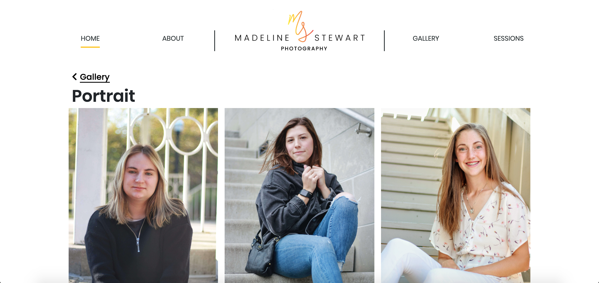
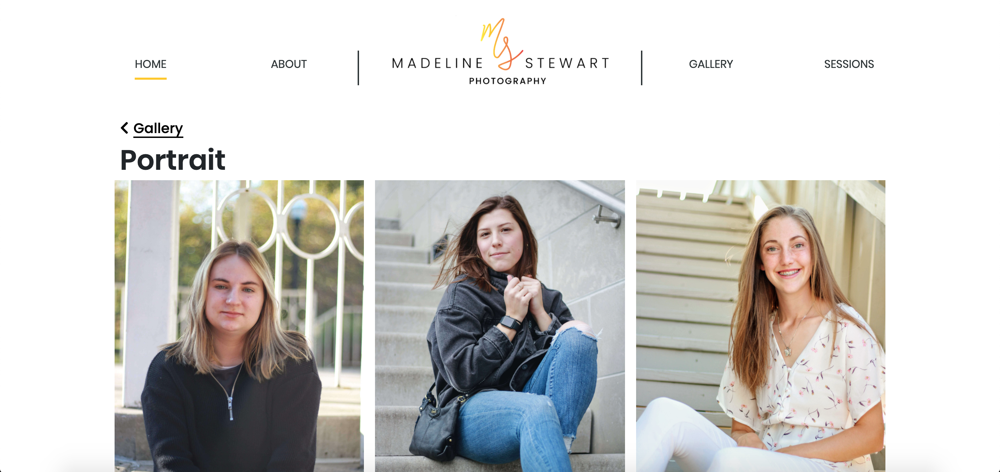

BACKGROUND
I run a small photography business outside of being a software engineer. I have designed and handcrafted my own website since the beginning. There have been several iterations of its design. This page will showcase how it currently stands.
DESIGN
I began by asking friends what they would want in a photographer's website, whom they were considering hiring. The two most requested things were having a simple, professional website where they could view my portfolio, as well as direct pricing and schedueling information. I decided to design in a mobile-first fashion, as I expect a large majority of people to access my website through the link in my instagram. I will describe the design through the lens of mobile, but have also included images of the website in repsonsive desktop view as well. I had friends test out my design and provide feedback after it was complete.
Home Page
The home page features a carousel of a few featured images, my logo, as well as a hamburger menu icon. If the user selects the menu icon, the menu slides out from the left of the screen providing links to my other pages and my social media. The menu can be closed by tapping the menu icon once more. The rest of my home page features some words from me and reviews from some former clients. The footer features a button asking the user if they need a photographer, linked to my pricing and schedueling information. Below that is a brief description of me and who I am, as well as my social media and contact infomation once more. This same footer is present at the end of every page.
Mobile Details
I wanted to keep my gallery organized and simple. A user can view my portfolio of any category by accessing the gallery landing page and selecting the corresponding tile. Once inside a specific gallery, the images are arranged in a responsive manner. Each image can be clicked on to be viewed larger in a lightbox.
Gallery Landing Page
 

Professional Gallery Page
My goal with the contact page was to keep it direct and suscinct. I first list my pricing for various session types and then ask the user if they're ready to book a session with me. Beneath the question header, I list instructions for booking and my various methods of contact.
Contact Page
FUTURE
I have a few ideas for how to improve my current design:
- Adding small navigational tiles to the end of gallery pages for quick hops to other portfolio categories.
- Adding a drop down on hover over the "gallery" navigation for direct access to specific categories.
- Adding an about me page, as feeling comfortable with the photographer is an important part of business.